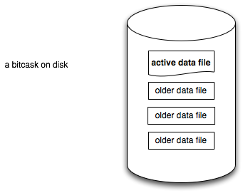
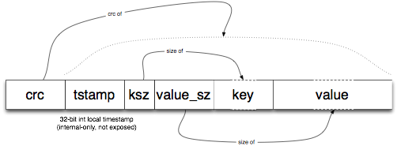
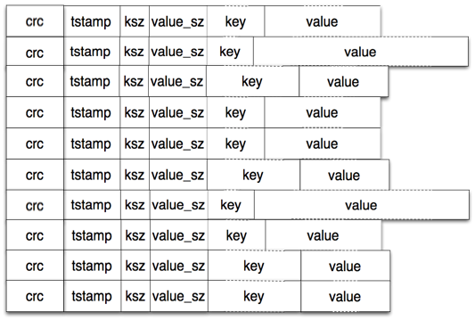
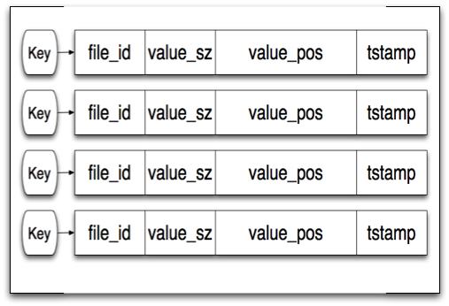
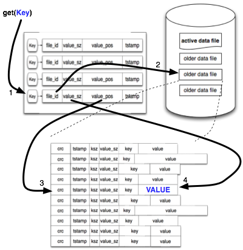
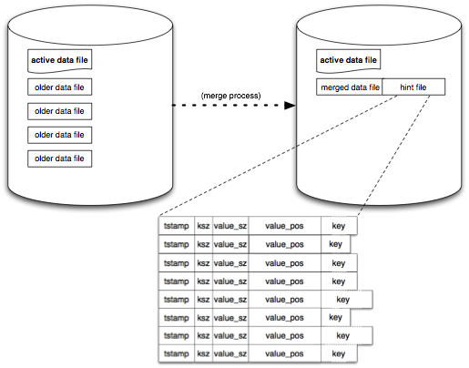

The origin of bitcask is tied to the history of the Riak distributed database. In a Riak key/value cluster, each node uses pluggable local storage; nearly anything k/v-shaped can be used as the per-host storage engine. This pluggability allowed progress on Riak to be parallelized such that storage engines could be improved and tested without impact on the rest of the codebase.
Many such local key/value stores already exist, including but not limited to Berkeley DB, Tokyo Cabinet, and Innostore.
There are many goals we sought when evaluating such storage engines, including:
Achieving some of these is easy. Achieving them all is less so.
None of the local key/value storage systems available (including but not limited to those written by the authors) were ideal with regard to all of the above goals. We were discussing this issue with Eric Brewer (besides a long history of great work in distributed systems, he recently was awarded the ACM-Infosys Foundation Award for scalable Web technology ) when he had a key insight about hash table log merging: that doing so could potentially be made as fast or faster than LSM-trees.
This led us to explore some of the techniques used in the log-structured file systems first developed in the 1980s and 1990s in a new light. That exploration led to the development of bitcask, a storage system that meets all of the above goals very well. While bitcask was originally developed with a goal of being used under Riak, it was also built to be generic and can serve as a local key/value store for other applications as well.
The model we ended up going with is conceptually very simple. A bitcask instance is a directory, and we enforce that only one operating system process will open that bitcask for writing at a given time. (think of that process effectively as the "database server") At any moment, one file is "active" in that directory for writing by the server. When that file meets a size threshold it will be closed, and a new active file will be created. Once a file is closed, either purposefully or due to server exit, it is considered immutable and will never be opened for writing again.

The active file is only written by appending, which means that sequential writes do not require disk seeking. The format that is written for each key/value entry is simple:

As each put request is handled, a new entry is appeneded to the active file. Note that deletion is simple a "put" of a special tombstone value, which will be removed on the next merge. Thus, a bitcask data file is nothing more than a linear sequence of these entries:

After the append completes, an in-memory structure called a "keydir" is updated. A keydir is simply a hash table that maps every key in a bitcask to a fixed-size structure giving the file, offset, and size of the most recently written entry for that key.

When a write occurs, the keydir is atomically updated with the location of the newest data. The old data is still present on disk, but any new reads will use the latest version available in the keydir. As we'll see later, the merge process will eventually remove the old value.
A read or "get" is simple, and doesn't ever require more than a single disk seek. We look up the key in our keydir, and from there we read the data using the file_id, position, and size that are returned from that lookup. In many cases, the operating system's filesystem read-ahead cache makes this a much faster operation than would be otherwise expected.

This simple model will use up a lot of space over time, since we just write out new values without touching the old ones. A process for compaction that we refer to as "merging" solves this. The merge process iterates over all non-active (i.e. immutable) files in a bitcask and produces as output a set of data files containing only the "live" or latest versions of each present key.
When this is done we also create a "hint file" next to each data file. These are essentially like the data files but instead of the values they contain the position and size of the values within the corresponding data file.

When a bitcask is opened by an erlang process, it checks to see if there is already another erlang process in the same VM that is using that bitcask. If so, it will share the keydir with that process. If not, it scans all of the data files in a directory in order to build a new keydir. For any data file that has a hint file, that will be scanned instead for a much quicker startup time.
That's basically the whole deal. Obviously, we've not tried to expose every single detail of operations in this document but rather to help you understand the general mechanisms of bitcask. A few quick notes on a couple of areas we breezed past are probably in order:
And let's look at the goals we had when we set out:
Bitcask is fast. We plan on doing more thorough benchmarks soon, but with sub-millisecond median times for both put and get operations in our early tests we are confident that it can be made to meet this goal for us.
In those same early tests on a laptop with slow disks, we have seen throughput of 5000-6000 writes per second.
The tests mentioned above exceeded RAM on the system in question, and showed no sign of changed behavior at that point. This is consistent with our expectations given the design of bitcask.
As the data files and the commit log are the same thing in bitcask, recovery is trivial with no need for "replay." The hint files produced when merging make the startup process speedy.
Since the files are immutable after rotation, backup can use whatever system-level mechanism is preferred by the operator with ease. Restoration requires nothing more than placing the data files in the desired directory.
Bitcask is conceptually simple, clean code, and the data files are very easy to understand and manage. We feel very comfortable supporting a system resting atop bitcask.
Under heavy access load we've already seen bitcask do well. So far it has only seen double-digit gigabyte volumes, but we'll be testing it with more soon. The shape of bitcask is such that we do not expect it to perform too differently under larger volume, with the one predictable exception that the keydir structure grows by a small amount with the number of keys and must fit entirely in RAM.
In summary, given this specific set of goals, bitcask suits our needs better than anything else we had available.
The API is quite simple:
|
bitcask:open(DirectoryName, Opts)
-> {ok, BitCaskHandle} | {error, any()} |
Open a new or existing bitcask datastore with additional options.
Valid options include read_write (if this process is going
to be a writer and not just a reader) and sync_on_put (if
this writer would prefer to sync the write file after every write
operation).
The directory must be readable and writable by this process, and only one process may open a bitcask with read_write at a time.
|
|
bitcask:open(DirectoryName)
-> {ok, BitCaskHandle} | {error, any()} |
Open a new or existing bitcask datastore for read-only access.
The directory and all files in it must be readable by this process. |
|
bitcask:get(BitCaskHandle, Key)
-> not_found | {ok, Value, BitCaskHandle} |
Retrieve a value by key from a bitcask datastore. |
|
bitcask:put(BitCaskHandle, Key, Value)
-> {ok, BitCaskHandle} | {error, any()} |
Store a key and value in a bitcase datastore. |
|
bitcask:delete(BitCaskHandle, Key)
-> {ok, BitCaskHandle} | {error, any()} |
Delete a key from a bitcask datastore. |
|
bitcask:list_keys(BitCaskHandle)
-> [Key] | {error, any()} |
List all keys in a bitcask datastore. |
|
bitcask:fold(BitCaskHandle,Fun,Acc0)
-> Acc |
Fold over all K/V pairs in a bitcask datastore.
Fun is expected to be of the form: F(K,V,Acc0) -> Acc.
|
|
bitcask:merge(DirectoryName)
-> ok | {error, any()} |
Merge several data files within a bitcask datastore into a more compact form.
Also, produce hintfiles for faster startup. |
|
bitcask:sync(BitCaskHandle)
-> ok |
Force any writes to sync to disk. |
|
bitcask:close(BitCaskHandle)
-> ok |
Close a bitcask data store and flush all pending writes (if any) to disk. |